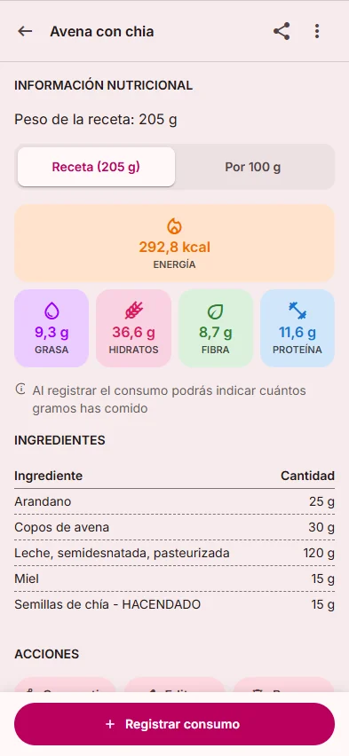
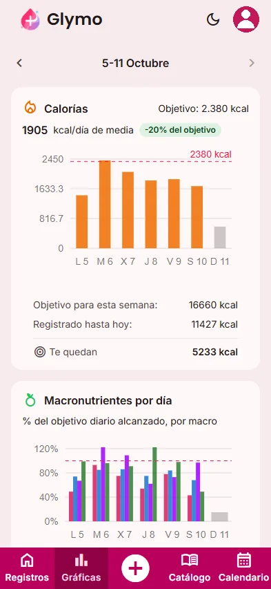
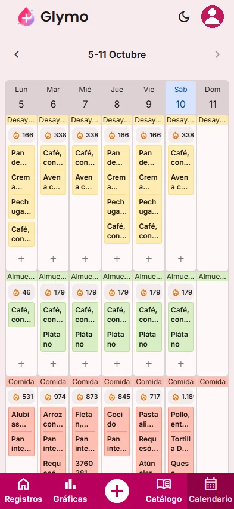

Cuenta tus calorías y macros,
sin complicaciones.
Registra tus comidas con una foto, escaneando un código de barras o desde tu propio catálogo. Glymo calcula tus objetivos de calorías y macronutrientes y te muestra tu progreso en gráficas y calendario.
- Calorías
- Proteínas
- Carbohidratos
- Grasas
- Fibra
Ilustración con datos de ejemplo.
Todo lo que necesitas para controlar tu alimentación
Objetivos personalizados
Cuéntanos tus datos físicos y tus metas y Glymo calcula tus objetivos diarios de calorías, proteínas, carbohidratos, grasas y fibra.
Registra comidas con una foto
Haz una foto a tu plato y deja que la inteligencia artificial analice la comida para que la registres en segundos.
Escáner de código de barras
Escanea el código de barras de un producto envasado y añádelo a tu día sin tener que buscarlo.
Catálogo propio y base BEDCA
Crea tus alimentos y recetas y accede a la lista de alimentos de la base de datos BEDCA.
Gráficas de progreso
Compara cada semana tus calorías con tu objetivo y mira qué porcentaje de cada macro alcanzas día a día.
Calendario de comidas
Consulta tus comidas de la semana y repítelas en otros días con un par de toques.
Una herramienta pensada para que llevar el control de lo que comes sea sencillo: registra, revisa tus calorías y macros y sigue tu evolución sin perder tiempo.
Tus recetas, con los macros ya calculados.
Crea tus recetas con tus ingredientes y Glymo calcula la energía, la grasa, los hidratos, la fibra y las proteínas de la receta completa o por cada 100 g. Al registrar el consumo, indicas cuántos gramos has comido.
- Guarda recetas personalizadas, como tu “Avena con chía”
- Consulta la información nutricional por receta o por 100 g
- Accede a la lista de alimentos de la base BEDCA
- Crea alimentos propios con su información nutricional
- Repite con un toque lo que comiste ayer

Cómo funciona Glymo
De tus datos a tu progreso en tres pasos.
Cuéntanos sobre ti
Al registrarte indicas tus datos físicos básicos y tus objetivos. Con ellos calculamos tus calorías y macros diarios. ¿Tu nutricionista te ha dado otros? Puedes cambiarlos a mano en los ajustes.
Registra lo que comes
Haz una foto a tu plato, escanea el código de barras de un producto o elige alimentos y recetas de tu catálogo.
Sigue tu progreso
Consulta cuánto te queda por consumir hoy, revisa tus gráficas semanales y organiza tus comidas en el calendario.
Ve cómo avanza tu semana de un vistazo.
Las gráficas te muestran tu media diaria de calorías frente a tu objetivo, lo que llevas registrado y lo que te queda para completar la semana, además del porcentaje de cada macronutriente que alcanzas cada día.
En el calendario ves tus comidas por franjas del día y puedes repetirlas en otros días para ahorrar tiempo.


"Glymo nació para resolver un problema real y ha ido creciendo con quienes la usan."
De una necesidad real a una app de nutrición.
Glymo empezó hace años como una herramienta personal. Como desarrollador, creé una primera versión para ayudar a un amigo cercano a organizar sus comidas y sus cálculos diarios en un solo lugar.
Con el tiempo, la aplicación fue evolucionando y hoy se centra en la nutrición: registrar lo que comes de la forma más rápida posible, conocer tus calorías y macronutrientes y seguir tu progreso.
Esa base sigue siendo la idea de Glymo: una herramienta clara, sencilla y pensada para el día a día, accesible a cualquier persona que quiera cuidar su alimentación.
Preguntas frecuentes
¿Glymo sustituye a un nutricionista o a un profesional sanitario?
No. Glymo no es un dispositivo médico ni sustituye la consulta con un nutricionista o un profesional sanitario. Las estimaciones son orientativas y, si tienes una condición de salud o una pauta alimentaria específica, debes seguir siempre las indicaciones de tu profesional.
¿Cómo calcula Glymo mis objetivos de calorías y macros?
Al registrarte, Glymo te pide tus datos físicos básicos y tus objetivos. A partir de ellos calcula tus objetivos diarios de calorías, proteínas, carbohidratos, grasas y fibra.
¿Puedo usar los objetivos que me ha dado mi nutricionista?
Sí. En los ajustes puedes modificar tus datos y objetivos, y también cambiar manualmente tus objetivos de macronutrientes.
¿De qué formas puedo registrar mis comidas?
Puedes hacerlo con una foto analizada con inteligencia artificial, escaneando el código de barras de un producto o eligiendo alimentos y recetas de tu catálogo. El análisis de imágenes es una estimación, por lo que conviene revisarlo.
¿Qué es BEDCA?
BEDCA es la Base de Datos Española de Composición de Alimentos. En Glymo está disponible su lista de alimentos para que puedas usarla junto a tus propios alimentos y recetas.
¿Qué ocurre con mis datos personales?
Tus datos son privados y solo accesibles por ti. Glymo no vende tu información y solo la utiliza para ofrecerte las funciones de seguimiento y visualización dentro de la aplicación. Si usas el registro por foto, la imagen se envía a Gemini (Google) para su análisis, sin ningún dato que te identifique. Puedes leer todos los detalles en nuestra política de privacidad.
¿Glymo es gratuita?
Actualmente, Glymo es gratuita. En el futuro podrían incorporarse opciones como publicidad para ayudar a cubrir los costes de mantenimiento y desarrollo de la plataforma.
¿En qué dispositivos está disponible Glymo?
Glymo está disponible en versión web. Está previsto su lanzamiento en Android próximamente y, más adelante, en iOS.
¡Próximamente en App Store y Play Store!
Estamos puliendo nuestras apps nativas para ti. Mientras tanto, instala nuestra Web App en un clic: funciona con la misma fluidez, rapidez y ligereza que una app convencional.
Android
Instala la aplicación directamente desde Chrome para la mejor experiencia.
Instalación en iOS (Web App)
Instala la aplicación directamente desde Safari para la mejor experiencia.
Ayúdanos a mejorar
¿Tienes alguna sugerencia o solicitud de función? Nos encantaría escucharte.
Tambien puedes contactar con nosotros por correo electrónico: soporte@glymo.es